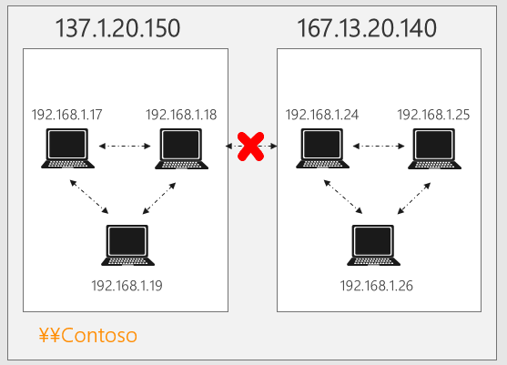
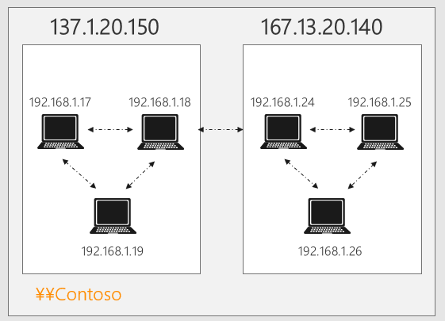

※本記事はマイクロソフト社員によって公開されております。
※この記事は過去に作成され、公開された記事を再編したものです。
みなさま、こんにちは。WSUS サポート チームです。
ちょっと期間が空いてしまいましたが、今回は第 1 回は「概要篇」に引き続き、配信の最適化のグループ ポリシーについて紹介をいたします。グループ ポリシーの一覧や各設定を行った場合の詳細については、以下の公開情報にて紹介していますので、今回はポイントを絞ってよくご利用いただくグループ ポリシーについて案内していきます。
ダウンロード モードの設定
配信の最適化の機能を利用する上で、一番重要なグループ ポリシーが以下のダウンロードの設定です。この設定で配信の最適化でピアとしてクライアントが選択される範囲を指定することが出来ます。
- [コンピューターの構成] -> [管理用テンプレート] -> [Windows コンポーネント] -> [配信の最適化] -> [ダウンロード モード]
配信の最適化を有効に活用して、クライアント同士で P2P の通信を行いたい場合には、以下の 3 つの内いずれかを選択します。これらについては図も含めて後ほど詳細を紹介します。
- LAN (1 - 既定) : 同じパブリック IP アドレスを使用してインターネットに接続するクライアント同士
- グループ (2) : 同じドメインや同じ Active Directory サイトのクライアント同士、または同じグループ ID のクライアント同士
- インターネット (3) : インターネット上のクライアントも含めたクライアント同士
また、逆に P2P での通信を行いたくない場合には、以下の 3 つの内いずれかを選択します。いずれも P2P の通信は行いませんが、以下の表に示す通り、細かな動作の違いがあります。
| 設定 | ダウンロード時に利用するサービス | クラウド サービスへの接続 |
|---|---|---|
| HTTP のみ (0) | Delivery Optimization | あり |
| 簡易 (99) | Delivery Optimization | なし |
| バイパス (100) | Background Intelligent Transfer Service(BITS) | なし |
※ 注意 : ダウンロード モードのグループ ポリシーを “無効” に設定しても、P2P の通信は無効に出来ません。”無効” の場合は、既定の設定が利用されます。
クラウド サービスの接続も含めて無効化する場合には、「簡易 (99)」もしくは「バイパス (100)」を選択しましょう。また、このブログでも紹介している通り BranchCache や、このブログの C として紹介している BITS の帯域制限等、以前の OS から利用出来た BITS に関連する機能を利用したい場合には、「バイパス」を選択していただく必要があるので注意が必要です。
さて、それではさらに LAN (1 - 既定)、グループ (2)、インターネット (3) を選択した場合の動作について詳しく説明していきます。
LAN (1 - 既定) を選択した場合の動作
LAN を選択した場合には、以下のように同じパブリック IP アドレスを使用してインターネットに接続するクライアント同士でピアリングが行われます。各拠点で利用しているパブリック IP アドレスが異なるようなネットワーク構成では、本設定が有効です。

逆に複数の拠点で、共通した 1 つのパブリック IP アドレスを利用しているようなネットワーク構成の場合には、本モードを選択すると拠点を跨いだ P2P の通信が発生してしまう可能性があるため、注意してください。
グループ (2) を選択した場合の動作
グループ (2) を選択した場合には、以下のように同じドメインや同じ Active Directory サイトのクライアント同士でピアリングが行われます。

また、グループを選択した場合には、以下のグループ ポリシーと組み合わせて設定をすることで、同一のグループ ID を設定したクライアント内でピアリングを行よう範囲をカスタマイズすることが出来ます。グループ ID と指定する ID は一意の GUID であれば、なんでも問題ありませんので、公開情報に記載の通り Powershell で [guid]::NewGuid() を実行し、ID を生成し設定してください。
- [コンピューターの構成] -> [管理用テンプレート] -> [Windows コンポーネント] -> [配信の最適化] -> [グループ ID]
- 補足 :同じサブネット内のクライアントでピアリングが行われるよう制限を掛けたい場合
バージョン 1803 のクライアントからは、同じサブネット内のクライアントでピアリングが行われるよう制限を掛けたい場合に、併せて以下のグループ ポリシーを設定することで、要望を実現することが可能となりましたので、こちらの設定についても併せてご検討ください。
- [コンピューターの構成] -> [管理用テンプレート] -> [Windows コンポーネント] -> [配信の最適化] -> [ピアの選択を制限する方法を選択します] を “有効” に設定し、オプションにて “サブネット” を選択
インターネット (3) を選択した場合の動作
インターネット (3) を選択した場合には、インターネット越しのクライアントも含めてピアリングが行われる動作となります。インターネット経由でのピアリングも行われる可能性がある設定となり、一般的にエンタープライズ環境で利用していただくことはあまりありません。
エンタープライズの環境でよくご利用いただく設定
その他の設定も含め、配信の最適化による P2P を動作させるために、エンタープライズ環境でよくご利用いただく設定値について、参考としてご案内します。
なお、以前のブログでも紹介した通り、配信の最適化では端末同士のピアリングを Delivery Optimization のクラウド サービス上で行っており、これらの値を設定した場合でもダウンロードするファイルの 100% をピアからファイルを取ってくるような動作になりませんので、ご注意ください。
| ポリシー名 | 設定値 | 設定の意図 |
| ダウンロード モード | “1” もしくは “2” | NW 構成に合わせて、ピアが自動的に選定されるようにするため |
| 最小ピア キャッシュ コンテンツ ファイル サイズ (MB) | 10 MB(100 台以上の場合は 1 MB) | より多くのファイルが P2P されるようにするため |
| 最大キャッシュ時間 (秒) | 7 ~ 30 日間 | より長い期間、コンテンツがキャッシュされるようにするため |
| http からのバックグラウンド ダウンロードを延期 (秒) ※ http からのフォアグラウンド ダウンロードを延期 (秒) ※ | 1 時間1 分 | 時間を要しても可能な限りピアからダウンロードさせるため※ 設定するとピアが見つかるまで設定時間の間、待機する動作になります |
| 最大ダウンロード帯域幅 (KB/秒) バックグラウンド ダウンロード帯域幅を制限する営業時間を設定します ※フォアグラウンド ダウンロード帯域幅を制限する 営業時間を設定します ※ | NW 構成に合わせて設定 | NW 構成に合わせた帯域制御の設定を行うため |
エンタープライズの環境でよくご利用いただく設定
※ これらのポリシーはバージョン 1803 より利用できます。
「グループポリシー篇」は以上です。さて次回は実際の効果を測定する「効果測定篇」となります。お楽しみに！
(免責事項)
本情報の内容 ( 添付文書、リンク先などを含む ) は、作成日時点でのものであり、予告なく変更される場合があります。